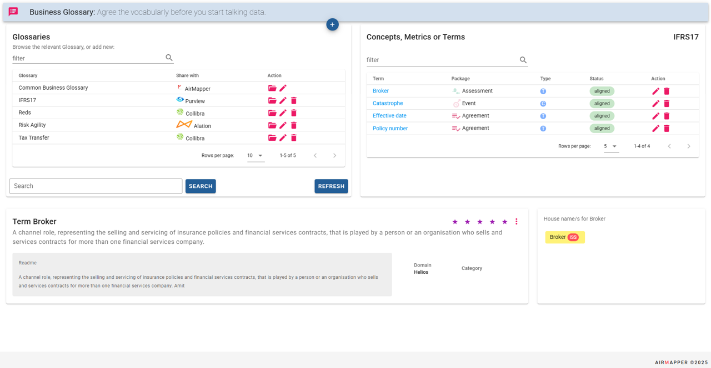
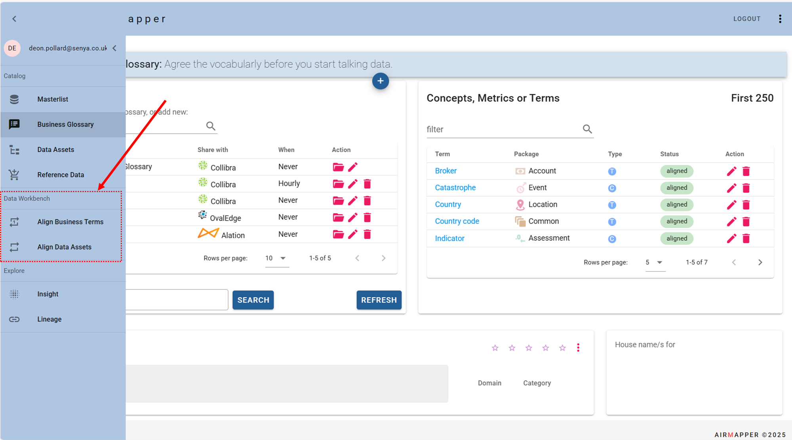
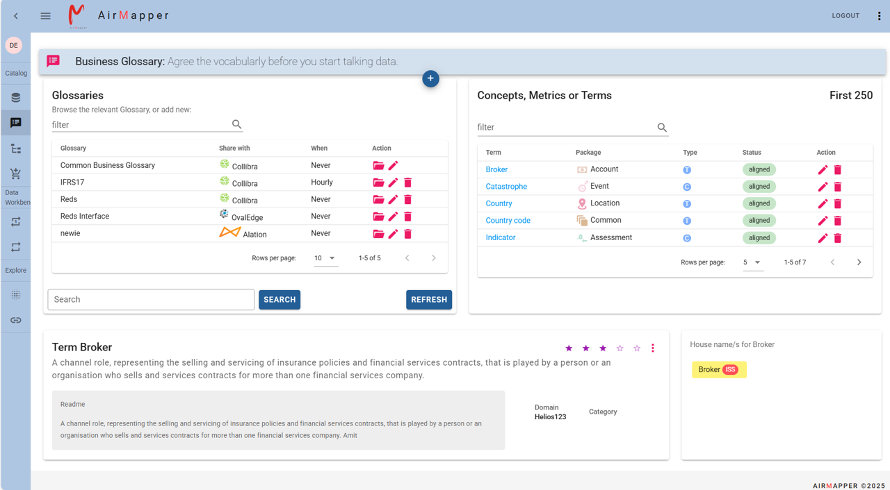
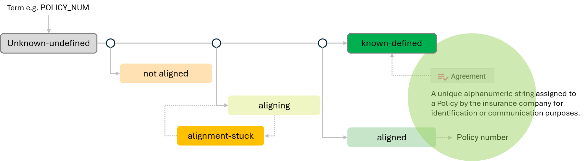
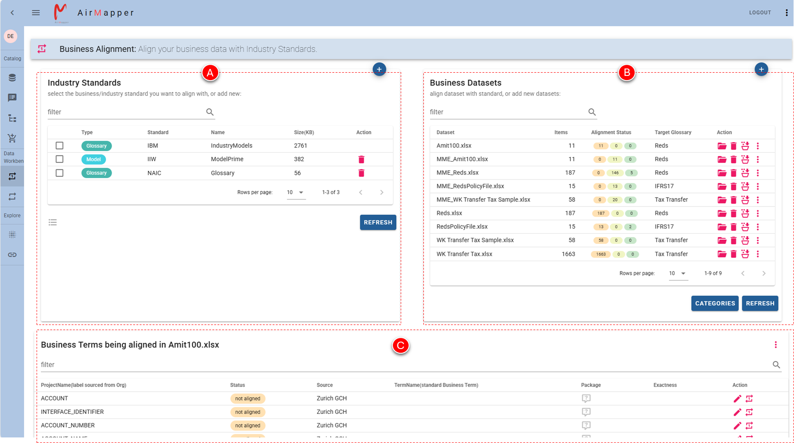
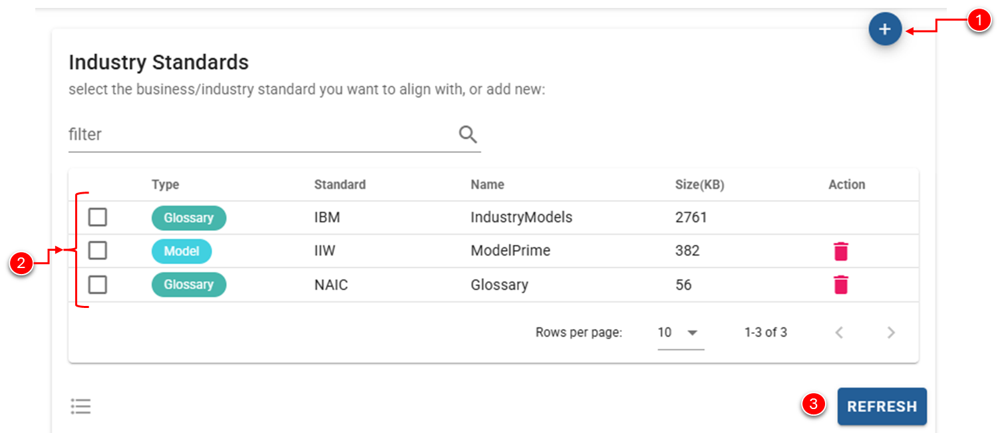
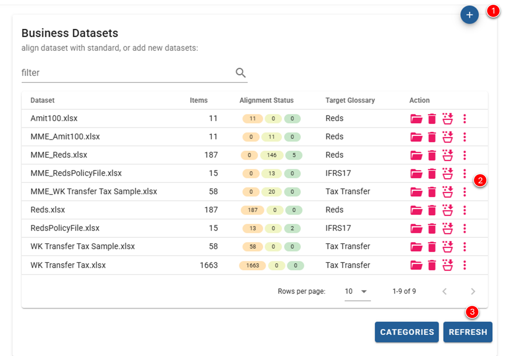
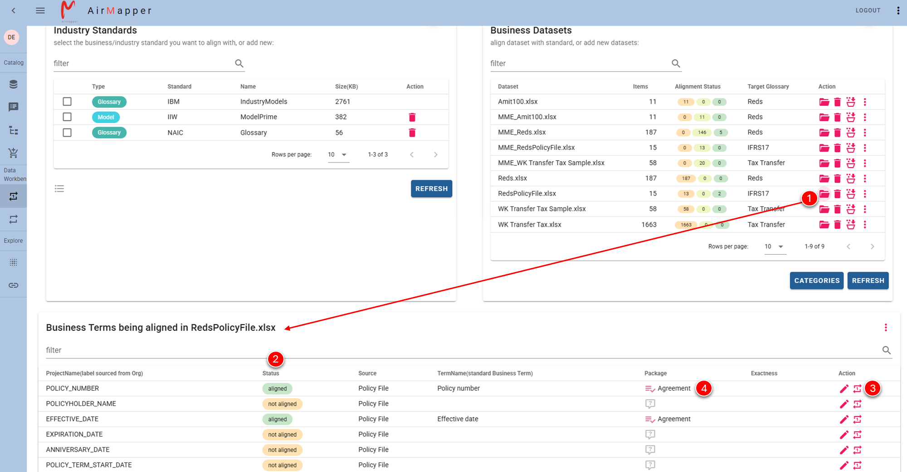
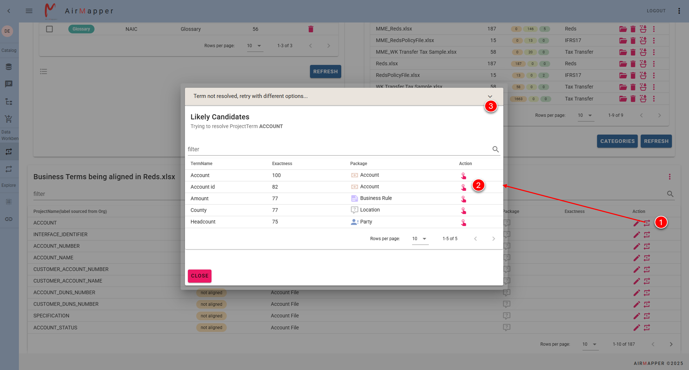
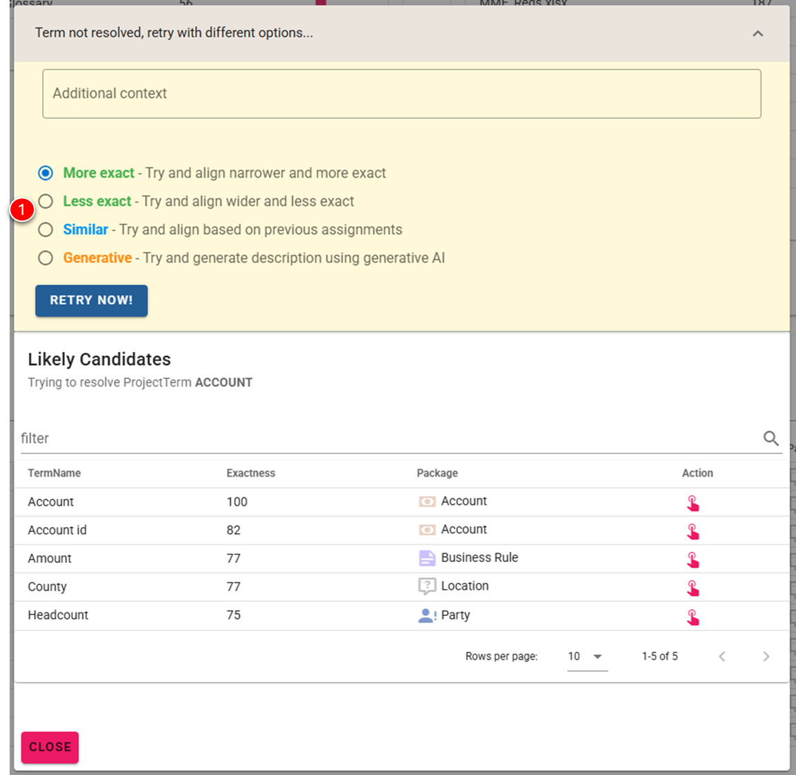

AirMapper
| Copyright | Copyright © 2025 AirMapper |
Home ↵
Home
AirMapper your simple, no-code data platform to help solve data problems driving business value. Everything revolves around data, so not having understood data is a non-starter. Without it, you can’t compete, you can’t understand your customers and how they use your products, full stop you can’t execute.
Overview
Understanding your data doesn’t need to be hard. Automate and simplify with AirMapper.
Data Catalogs stop at creating a data inventory. We start there. They also try to catalog the universe. We don't.
Using AirMapper
Broadly speaking when and how can AirMapper be used?
- Pilot Mode - Senya Consulting engagement where AirMapper is helping to support the delivery
- Pickle Mode – Customer already acquired a Data Catalog and needs help to straighten and fill it
- Pop-Up Mode – Customer needs an outcome-based Data Catalog solving a specific business problem; Customer may or may not have other Data Catalogs
- Provision Mode – The customer needs a Business Glossary capability.
Positioning AirMapper
| Catalog Providers | AirMapper | Implications | |
|---|---|---|---|
Scope |
Believe one should catalog the Universe. | Believe one should catalog around a specific business problem that needs solving | One becomes an Inventory swamp; most businesspeople cannot navigate nor find the right information. The other becomes a clear portfolio of items shaping the solution |
Purpose |
Believe the primary purpose of a catalog is a centralised inventory of all data | Believe it is more about mastering a specific subset of data so that a particular business problem can be understood and solved | Data is everywhere, mostly outside the traditional boundaries and often in transition. Therefore one needs to find a way dealing with this. In our opinion very hard to cater for in existing Data Catalogs |
Strength |
Believe the strength of a Catalog is based on the number of different Technical Data Asset Connectors scanning Technical Meta Data | Believe in most cases, there is more value to be had from scanning Business Data Assets (e.g. Terms, Processes, Screen fields, Forms & Services) oppose to Tech resources. Broadly based on where one see most value accruing. | General Catalog providers work inside out scanning anything that moves resulting in a wide less usable catalog. We prefer outside-in arguably more narrow yet specific to business pain points. |
Setup & usability |
Typically takes many months for setup and general use. Characterised as being too complex. | Cloud native, same day use, almost zero setup | Immediate tangible value, not wait 6 months before being able to use |
Cost and adoption |
In general scanned technical meta-data is added to the catalog with owners adding tags with subjective classifications. | Batteries included. Provide widely accepted Industry Models and standards that data can be automatically or semi-automatically be aligned with. | Crooked data vs straight data. |
Getting Started
Get started in 3 steps, without any fuss.
Step 1
Step 2
Step 3
Internal notes
Under Development
This component is not commercially available yet
Frequently Asked Questions
General FAQ's
What does the name AirMapper mean?
AirMapper is a play on the soft integration between differing Data Catalogs and products aiming to semantically align data. We started with the AirMapper product in late 2024 with an idea to leverage our many years of success in helping clients to align to industry standards.
Why AirMapper?
On last count there is more than thirty Data Catalog providers but to our knowledge there is no other which can effectively align business data. Most rely on technical connectors and technical tribal knowledge We have a great track record in the data world with many people using our process andin-house product called PowerMapper. AirMapper extends this capability.
How long does it take to set up AirMapper?
AirMapper does not really require any setup, though some provisioning is needed for connectivity in line with most cloud solutions. Basically you need access to our solution.
How much does AirMapper cost?
Contact Senya for pricing.
Are there any overage fees?
Nope, nobody likes hidden fees. Our pricing is designed to scale with your business, so we do ask that you purchase a product that will fit your level of use.
Can I try it out for free?
No trial option is currently available.
Technical FAQ's
Is AirMapper deployed on-premise or in the Cloud?
AirMapper is currently available as cloud only offering. If demand exists AirMapper maay be made available on-premise.
How secure is AirMapper?
Very secure. AirMapper is deployed using accepted industry controls in your environmentand standards.
Business FAQ's
Can we use AirMapper to help us comply with DORA, GDPR legislation?
Absolutely.
Will our costs sky rockets when we use AirMapper for other things?
Our intent is to make AirMapper pricing predictable, affordable and neutral to usage. That is you will not pay more when you are doing more data transfersalignments oppose to less. So you will end up with predictable transparent pricing, irrespective of usage.
Does Senya offer a migration service?
Not at the moment, though basic support is available. Hopefully in future our Partner Network will offer some complimentary services.
Ended: Home
Business Glossary
What is it?
A business glossary is a list of business terms and their definitions that organizations use to ensure the same definitions are used company-wide when dealing with data. A business glossary produces a common business vocabulary, used by everyone in an organization.
What makes AirMapper unique is the data workbench it provides allowing raw unstructured business information to be automatically or semi-automatically mapped to standards/models providing instant business coherence and understanding of the mapped data.
Why have it?
If you have ever been to a group meeting where different teams discuss about important business topics, you might have heard some business terms being used synonymously. For example, the sales department would use the term customer, the marketing department would the term client and the product team would use a term user; You might be wondering whether the terms customer, client, user is the same thing! What are the chances that the definition of those terms be different even though all the departments work for the same organisation?
Thus, the definitions of business terms are very important as it helps organisation to have
- Shared understanding of common business terms
- Common definitions
- Consistent data collection practices
- Right business logics applied to business metrics
- Reliable business metrics
Business glossary is a collection of all the business terms used across your organisation. It provides clarity to ambiguous business and technical jargons that are used synonymously across your organisation. It provides a shared understanding of a business term across your organisation to ensure that everyone is referring to a same thing.
How to use it?
Invoke AirMapper and navigate to Glossary section.

The interface is intuitive and simple to use, calling out the following:
- Glossary Pane Left top pane - Manage Glossaries and optionally
should you want to share info with other Data Catalogs - Content of a Glossary Pane Right top pane - Browse Glossary Content
conceptormetricorterm - Term Pane Bottom pane - Descriptive details
details
Info
Business Glossaries are fed from each Workbench where acquired data is aligned and then published into the Business Glossaries.
Internal notes
Protected, only for administrative use
Not completed!
Data Catalog
What is it?
The AirMapper data catalog inventorise technical metadata and makes critical technical data items available through metadata management.
It should be noted that Business Data is handled via the Business Glossary function. This function within reason can also deal with technical data items for the interim.
Internal notes
Under Development
This component is not commercially available yet
Data Workbench ↵
Data Workbench
What is it?
AirMapper's Data Workbench is a powerful platform designed to provide you with ways to categorise, arrange or map your raw unknown data to standards of your choice. You can either do that to:
- broaden the business vocabularly(create and enhance your Business Glossary),
- gain knowledge on technical data(create and enhance your Data Catalog),
- produce a data product(create and enhance your Data Product Portfolio).
Why have it?
Most value to be had according to almost all Data Catalog providers is the ability to find your data. We argue differently. We argue most value is in rapid understanding of data so that it can be use for business value.
Therefore we have created the Data Workbench to help you automatically, semi-automatically or with human intervention make sense of your data. This may be as simple as figuring out what the right business definition is of a term or associating a technical field with an agreed upon technical model attribute that instantly provide data context.
How to use it?
Invoke AirMapper and navigate to Workbench section.

You can now either click on:
- Align Business Terms menu item invoking the workbench component dealing with your Business Glossary
- Align Data Assets menu item invoking the workbench component helping you with your Data Catalog
Internal notes
Protected, only for administrative use
Not completed!
Glossary ↵
Workbench - Data Glossary
What is it?
The Glossary workbench acquire a set of business data, typically arrange as loose standing terms and then automatically or not take it thru an alignment process. Essentially this process associate a term with the right description and the right package.

Concept of alignment

The workbench primarily helps with data alignment. Alignment in AirMapper is somewhat analogous to data curation, a process of preparing and managing data from a raw, unknown and undefined state, to a structured well-known, defined state. Therefore business users can easily understand and readily use it.
For terms once aligned, at a minimum one knows:
- what the standard term is,
- the standardised definition or description of it,
- where it fits with some context.
Why have it?
It's a tool helping you to define and understand key business concepts and processes based on Industry standards, previous decisions and shared understanding. Defining business terms without a tool can pose various challenges such as lack of consistency, ambuguity and increased risk of errors. Human error is more likely when defining business terms manually. Misinterpretations, omissions, or inconsistencies can crop up, resulting in incorrect or misleading information.
How to use it

The glossary workbench is divided into the following panes.
- A. Industry Standards Pane It shows the Industry Models or standards
you want to align with - B. Business Datasets Pane It shows any dataset you
you acquiredorin the process of alignment - C. Business Terms being aligned Pane Browse or align data items for a
specific dataset
Astute users will note that the arrangement of the different panes helps one to quickly and easily move from raw business concepts to understood and aligned items, ready for use in your Business Glossary.
Which standards? (1)
 Choose Industry or your own custom standards
Choose Industry or your own custom standards
What data? (1)
- Supply, fetch or harvest data
How to align (1)
- Automatically, semi-automatically or with human oversight align the data
Industry Standards Pane
Here you can upload and manage any standard you want to align to. Some standards are supplied out of the box.

- Click to add a new set of Standards.
- Manage each set of standards.
- Refresh to get latest view of all the Standards that can be selected
Info
Please refer to Custom to create your own set of Organizational or custom standards. Once created you can add it using the same process.
Business Datasets Pane
The right side of the screen shows all the raw or datasets under alignment.

-
Add a new Dataset.
Click to add a new dataset with terms you want to align. The dataset must be an Excel spreadsheet. It should contain a Workbook called
Sheet1with at least a column calledProjectNamecontaining terms you wish to align. Please refer to dataset format for more details.The process requires you to choose a Business Glossary where you can publish the results of the workbench -
Manage each Dataset.
You may perform the following actions on any Dataset(red buttons on the right of each Dataset item)Opena DatasetDeletea DatasetAlign all itemsin a DatasetMore Actionsmenu of actionsPublish to Glossarytakes all aligned items from the current opened dataset and publish it to a Business Glossary
- Refresh to get latest view of all the Standards that can be selected
Note
One can either align all items in a dataset or open the dataset and align items individually.
Align all items
Aligning items are very resource intensive, therefore when you click this button and more than 10 items is detected a background job will be submitted. You will be notified via email about job completion and status usually within 2-3 hours. Note that one need to select a given standard to align to.
Process will always create a new dataset prefixed with MME_
Business Terms being aligned Pane
The bottom of the screen shows entries within an opened dataset upon which one can perform actions.

- Click to open the Dataset which will show all the items
- Visible is the Status of each item
- To align individual item click on action align
- If accepted new status will be reflected
Align individual item

- Click item in opened Dataset which will try and align the item and show results in Likely options
- Within the Likely options one can choose the preference in which case item will be marked
alignedand the term and defintion will be allocatedBe guided by the exactness indicator, which shows the degree of matching confidence
- If nothing shown or there is disagreement, click on retry with different options
This is an iterative process and results must be saved by clicking on the three dots SAVE TO DATASET if one needs to retain any changes. This will save it back to the opened dataset.
Retry with different options

- A number of choices is available in trying to resolve the item. Pick one that works best. Usually it is the Less Exact option
- Click on Retry Now and results will be shown
- Choose one. If it cannot be resolved one will have to discuss as exception and manage to resolve the term
Reference Details
Dataset Format
When adding or managing a Dataset with Terms it should be in the following format
- Excel (.xlsx) with at least one workbook called
Sheet1 - Mandatory column called
ProjectNamecontaining terms you wish to align. - Optional columns
| Column Name | Meaning |
|---|---|
Source |
Source where Term was sourced from. Examples of this may be Business document name, process or system name. |
mapstatus |
Alignment status field automatically supplied but can be overwritten |
TermName |
Aligned Term Name e.g. once aligned will be the standard term |
ShortDescription |
Aligned Description e.g. once aligned will be the standard description |
Package |
Aligned Package Name e.g. once aligned will be the standard Package category |
exactness |
Degree of certainty that the Alignment AI determine |
Readme |
Essential supporting information about the term including instructions, links, and other important context. |
| Sample | |
|---|---|
1 2 3 4 5 6 7 8 | |
Info
A term could be a Term, Concept or KPI
Alignment status
| Status | Meaning |
|---|---|
Not Aligned |
Item not aligned yet |
Aligning |
Item in the process of being aligned |
Aligned |
Item aligned, that is a term and category was assigned to it |
Aligment stuck |
An attempt was made to align the Item by the AI routines, but no matching term definition was found. Needs manual intervention. |
Internal notes
Protected, only for administrative use
Not completed!
Ended: Glossary
Catalog ↵
Workbench - Data Catalog
What is it?
To be completed!
Why have it?
To be completed!
How to use it
To be completed!
Internal notes
Protected, only for administrative use
Not completed!
Ended: Catalog
Ended: Data Workbench
About
In early 2020, as long-time Smartsheet users, we realized that there were very limited options available in terms of backup solutions for Smartsheet and we decided to create a comprehensive solution to address those backup/export needs. We founded a Company, built a platform, that can figure out automatically what to backup and landed first Customer Jan 2021 Since then, run as a focused provider well on our way to become a significant boutique player over next 5 years We are humbled by the many Customers continuously using our platform and striving to grow into a better and better platform together.
SmartBackup
Currently, SmartBackup is the most sophisticated and comprehensive backup solution available for Smartsheet today, and it includes several unique features which are not available in any other backup solution.
HSO
AcuWorkflow has established itself as a key player in securing Smartsheet data, and our expansion into bulk Smartsheet migration capability is anatural part of our vision for the future.
Copyright
The above copyright notice and this permission notice shall be included in all copies or substantial portions of the Software.
THE SOFTWARE IS PROVIDED "AS IS", WITHOUT WARRANTY OF ANY KIND, EXPRESS OR IMPLIED, INCLUDING BUT NOT LIMITED TO THE WARRANTIES OF MERCHANTABILITY, FITNESS FOR A PARTICULAR PURPOSE AND NON-INFRINGEMENT. IN NO EVENT SHALL THE AUTHORS OR COPYRIGHT HOLDERS BE LIABLE FOR ANY CLAIM, DAMAGES OR OTHER LIABILITY, WHETHER IN AN ACTION OF CONTRACT, TORT OR OTHERWISE, ARISING FROM, OUT OF OR IN CONNECTION WITH THE SOFTWARE OR THE USE OR OTHER DEALINGS IN THE SOFTWARE.